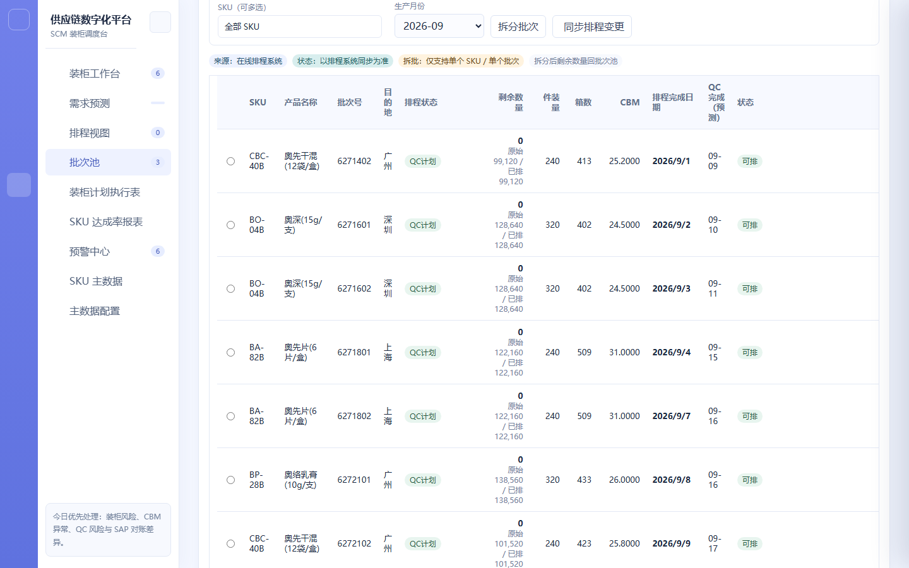
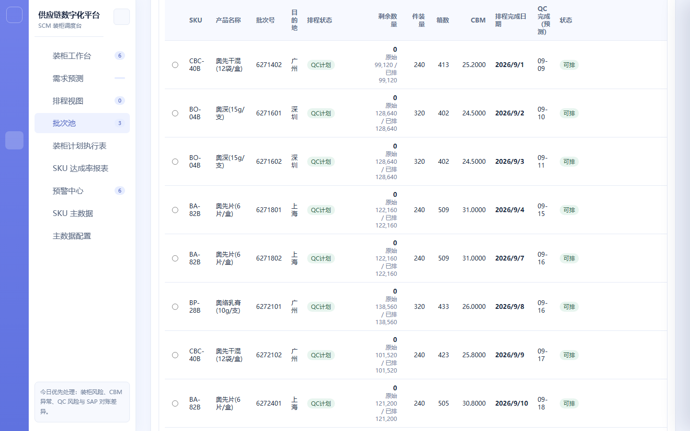

SKU 待分配批次池
项目信息
| 项目名称 | 供应链协同平台 | 模块 | SKU 待分配批次池 |
|---|---|---|---|
| 需求名称 | 批次池（可用批次与剩余量管理） | 负责人 | SCM 产品线 |
| 文档版本 | V1.0 | 状态 | 已确认 |
| 更新日期 | 2026-09-11 | 关联原型 | supply-chain-prototype.html（SKU 待分配批次池页） |
版本记录
| 版本 | 日期 | 变更说明 | 作者 |
|---|---|---|---|
| V1.0 | 2026-09-11 | 初版：可排/不可排分栏、多条件筛选、13 列批次表、剩余量计算口径专章（含数值算例）、人工拆批、整柜/同步排程、批次可用量守恒规则 | SCM 产品线 |
需求背景
批次池汇集排程系统与 SAP 的可用批次，是自动预排、拆批回池与货柜上架共用的唯一待分配数据源。此前批次「能否参加排柜」「还剩多少可排」两个问题分散在不同页面与线下表格中，容易出现同一批次被重复排入多个货柜、或已排量口径不一致导致缺口误判。
本模块需要收敛三点：每个批次的可排 / 不可排原因必须显式可见，不能让不符合条件的批次静默消失；剩余可用量必须有单一、可复算的口径，并对 SAP 出库与销毁做校正；批次状态以排程同步为准，人工只做拆批与排除，不直接改数量。
需求目标
- 以表格形式汇集全部可用批次，分「可排 / 不可排」两个页签，支持分页浏览。
- 明确每个批次的剩余可用量口径：剩余量 = 原始可用量 − max(已排计划量, SAP 出库量) − SAP 销毁量。
- 支持按产品编码（多选可搜索）、生产月份、排程状态筛选，并保留整柜与同步排程操作。
- 支持对选中批次按整箱人工拆批，沿用原 SAP 批号，拆出数量回池、总分配量守恒。
- 批次状态以排程同步为准；排程不可用、QC 未满足的批次不参加自动预排，但展示原因。
- SAP 销毁或库存差异影响已排批次时，生成批次不足 / SAP 对账差异预警，不自动改写货柜。
- 上架不同客户或不同目的地批次一律硬阻断，不生成后续混装预警。
业务流程图
批次池的端到端流程见下方流程图（独立文件），关键分支为「可排 / 不可排判定」「剩余量计算与校正」「人工拆批」「同步排程与预警生成」。
界面截图
下图为现有系统「SKU 待分配批次池」页面的真实运行截图。页签区分「可排 / 不可排」，上方为筛选区与操作按钮：

批次表 13 列（选择框、产品编码、产品名称、批次号、目的地、排程状态、剩余数量、件装量、箱数、每批 CBM、排程完成日期、QC 完成（预测）、状态）：

详细方案
| 一级模块 | 二级功能 | 原型 | 描述 |
|---|---|---|---|
| 批次池 | 可排 / 不可排分栏 |
【页面元素】页面顶部两个页签：「可排」「不可排」；页签右侧为四个统计标签，分别展示可排批次数、不可排批次数、可排箱数与可排 CBM。 【交互说明】切换页签 → 表格按对应数据范围刷新，筛选条件与选中状态保留；不可排页签下每行的「状态」列展示不可排原因。 【功能逻辑】可排判定同时满足：排程状态为可用、QC 完成日期早于最晚 QC 节点、剩余可用量 > 0；任一不满足则归入不可排。 【边界说明】不可排批次不参加自动预排，但必须保留在列表中并展示原因，不允许静默排除。 |
|
| 筛选与操作区 |
【页面元素】筛选区含：产品编码多选筛选（支持输入关键字搜索）、生产月份筛选（下拉）、排程状态筛选（下拉）；操作按钮含「拆批（选中批次）」「整柜」「同步排程」。 【交互说明】产品编码多选 → 输入关键字实时过滤下拉选项，可多选叠加；点「同步排程」→ 拉取最新排程批次并刷新列表；点「整柜」→ 将当前筛选范围内可排批次按预排规则整柜归集。 【功能逻辑】筛选条件为叠加关系（AND）；产品编码多选支持模糊匹配；筛选结果与页签、分页联动。 【数据与内容规则】生产月份选项来源于当前数据范围内批次的实际生产月份；排程状态选项为可排、不可排及具体不可排原因分类。 |
||
| 批次表（13 列） |
【页面元素】13 列：选择框、产品编码、产品名称、批次号、目的地、排程状态、剩余数量、件装量、箱数、每批 CBM、排程完成日期、QC 完成（预测）、状态。表格支持横向滚动与分页。 【交互说明】勾选行 → 激活「拆批」按钮；点列头 → 按该列排序；点击批次号 → 展开该批次详情（含原始可用量、已排量、剩余量明细）。 【数据与内容规则】箱数 = ceil(产品数量 / 件装量)；每批 CBM = 箱数 × 每件 CBM；剩余数量字段按下方专章口径计算。 【排序规则】默认按「可排优先 → 同客户 → 同目的地 → 同 SKU → 剩余数量降序」排列。 |
||
| 整柜归集 |
【交互说明】点「整柜」→ 在当前筛选范围内按 SKU + 客户 + 目的地分组，将可排批次按 CBM 上限归集为整柜建议，给出每组建议货柜数与装载率。 【功能逻辑】归集仅使用可排且 QC 可满足的批次；容量上限取自 SKU 主数据继承的柜型 CBM 上限；超过上限时拆分为多柜。 【边界说明】整柜归集为建议，需 SCM 确认后才生成货柜；不同客户、不同目的地的批次不合并归集。 |
||
| 同步排程 |
【交互说明】点「同步排程」→ 拉取最新排程批次数据，刷新可排/不可排状态与剩余数量；同步过程中按钮置为加载态。 【功能逻辑】批次状态以排程同步结果为准；同步后受影响货柜的 CBM、达成率与预警联动重算。 【边界说明】同步为只读拉取，不自动改写货柜计划；出现差异时转为预警条目。 |
||
| 人工拆批 |
【页面元素】「拆分批次」弹窗：拆出箱数（整箱为单位，默认带出系统建议值）、对应产品数量（按件装量自动换算、只读）、调整原因（选填）、剩余量提示条、「取消 / 确认拆分」按钮。 【交互说明】勾选一个可排批次 → 点「拆批」→ 输入拆出箱数 → 确认 → 拆出数量回批次池（状态「可排·人工拆批」），剩余量留在原记录。 【功能逻辑】仅「可排」状态批次可拆批，且单次只针对单 SKU 单批次；拆出箱数必须大于 0 且小于批次剩余箱数；拆批后 CBM 按数量比例重算并刷新达成率与预警。 【文案规范】「请先选择一个可拆分批次」「仅可对可排批次执行单 SKU 拆批」「拆分数量必须大于 0 且小于剩余数量」。 |
||
| 批次不足 / 对账差异预警 |
【功能逻辑】SAP 销毁或库存差异导致已排批次的可用量不足以覆盖已排计划量时，生成「批次不足」或「SAP 对账差异」预警；QC 未满足时生成 QC 类预警。 【边界说明】预警只提示与留痕，不自动取消货柜、不自动改写数量；需要阻断的规则在具体操作点（上架 / 拆批 / 保存）直接阻断。 【前置条件与权限】预警生成后由 SCM 复核处理；处理动作写入操作日志。 |
剩余可用量计算口径（专章）
批次剩余可用量是本模块的核心口径，也是预排、上架、达成率与缺口计算的共同基准。为保证可复算、可对账，统一采用以下公式：
| 项目 | 口径 | 数据来源 |
|---|---|---|
| 原始可用量 | 该 SAP 批号下的原始可用数量（生产入库后的可分配总量） | 排程系统 / SAP |
| 已排计划量 | 当前所有未取消货柜中该批次被分配的合计量 | 装柜计划 |
| SAP 出库量 | 该批次已实际出库的数量（发运后回传） | SAP |
| SAP 销毁量 | 该批次已确认销毁的数量 | SAP |
| 剩余可用量 | 原始可用量 − max(已排计划量, SAP 出库量) − SAP 销毁量 | 系统计算 |
口径说明：
- 已排计划量与 SAP 出库量取 max，而非相加——因为发运后两者描述的是同一批货的两种视角（计划分配 vs 实际出库），相加会重复扣减。
- SAP 销毁量为独立扣减项，与出库互斥，不参与 max 比较。
- 计算结果小于 0 时按 0 处理，并触发「SAP 对账差异」预警。
- 批次整体分配守恒：剩余可用量 + 已排计划量 + SAP 销毁量 = 原始可用量（当已排计划量 ≥ SAP 出库量时成立）。
数值算例
| 场景 | 原始可用量 | 已排计划量 | SAP 出库量 | SAP 销毁量 | 剩余可用量 | 说明 |
|---|---|---|---|---|---|---|
| 未发运（纯计划占用） | 10,000 | 6,000 | 0 | 0 | 4,000 | max(6000,0)=6000，扣减后余 4000 可继续上架 |
| 已发运（出库覆盖计划） | 10,000 | 6,000 | 6,000 | 0 | 4,000 | max 取 6000，未重复扣减，剩余仍为 4000 |
| 出库大于计划（超发） | 10,000 | 5,000 | 7,000 | 0 | 3,000 | max 取 7000，以实际出库为准 |
| 含销毁 | 10,000 | 6,000 | 0 | 500 | 3,500 | 6000 + 500 独立扣减 |
| 对账差异（负数兜底） | 10,000 | 9,800 | 0 | 500 | 0（触发预警） | 计算值 −300 按 0 处理并生成 SAP 对账差异预警 |
拆批与守恒
| 规则 | 说明 |
|---|---|
| 批号不变 | 拆出的子记录沿用原 SAP 批号，不生成新批号；以「拆分标识 + 拆分序号」追溯 |
| 最小单位 | 整箱为最小调整单位，拆出量按整箱计 |
| 总分配量守恒 | 拆批前后：剩余量 + 拆出量 = 拆批前的剩余量 |
| 回池状态 | 拆出部分状态置「可排·人工拆批」，回到待分配批次池 |
异常与边界
| 场景 | 处理 |
|---|---|
| 排程不可用 / QC 未满足 | 归入「不可排」页签并展示原因；不参加自动预排，但保留在列表中 |
| SAP 销毁或库存差异影响已排批次 | 生成「批次不足」或「SAP 对账差异」预警，不自动改写货柜 |
| 剩余量计算为负 | 按 0 处理，并触发 SAP 对账差异预警 |
| 拆批数量非法 | 提示「拆分数量必须大于 0 且小于剩余数量」；非可排批次提示「仅可对可排批次执行单 SKU 拆批」 |
| 未选批次点拆批 | 提示「请先选择一个可拆分批次」 |
| 跨客户 / 跨目的地混装 | 在具体操作点硬阻断：不同客户提示「不同客户，不能放置统一货柜」；不同目的地提示拆为两个货柜 |
| 整柜归集不足一柜 | 给出建议货柜数与装载率，标注「尾箱不足 50%」风险标签（不阻断） |
| 同步排程失败 | 保留上次同步结果并提示重试，不静默清空列表 |
数据埋点
| 事件名 | 触发时机 | 关键属性 |
|---|---|---|
| batch_tab_switch | 切换可排 / 不可排页签 | 页签类型、结果条数 |
| batch_filter_change | 变更产品编码 / 生产月份 / 排程状态筛选 | 筛选类型、条件值 |
| batch_sync_schedule | 点击同步排程 | 影响批次数、状态变化数 |
| batch_whole_container | 点击整柜归集 | 分组数、建议货柜数、平均装载率 |
| batch_split_confirm | 确认拆批 | 批次号、拆出箱数、拆出数量、调整原因 |
| batch_split_blocked | 拆批被拦截 | 批次号、拦截原因 |
| batch_detail_open | 展开批次剩余量明细 | 批次号、剩余量 |
上线计划
| 阶段 | 内容 | 时间 |
|---|---|---|
| 一期 | 可排/不可排分栏、多条件筛选、13 列批次表、剩余量口径与算例、人工拆批、整柜归集、同步排程、批次预警 | 待确认 |
| 二期 | 批次可用量趋势、拆批历史追溯视图、批次级对账差异明细导出 | 待确认 |
附录
| 术语 | 说明 |
|---|---|
| 批次池 | 汇集排程系统与 SAP 可用批次的待分配池，供预排、拆批回池和货柜上架使用 |
| 原始可用量 | SAP 批号下的原始可用数量（生产入库后的可分配总量） |
| 已排计划量 | 当前所有未取消货柜中该批次被分配的合计量 |
| 剩余可用量 | 原始可用量 − max(已排计划量, SAP 出库量) − SAP 销毁量 |
| 人工拆批 | 对单个可排批次按整箱拆分，拆出量回池；沿用原 SAP 批号，以拆分序号追溯 |
| 整柜归集 | 将筛选范围内可排批次按 SKU + 客户 + 目的地分组、按柜型容量归集为整柜建议 |
| 同步排程 | 只读拉取最新排程批次数据，刷新批次状态与剩余量，不改写货柜计划 |